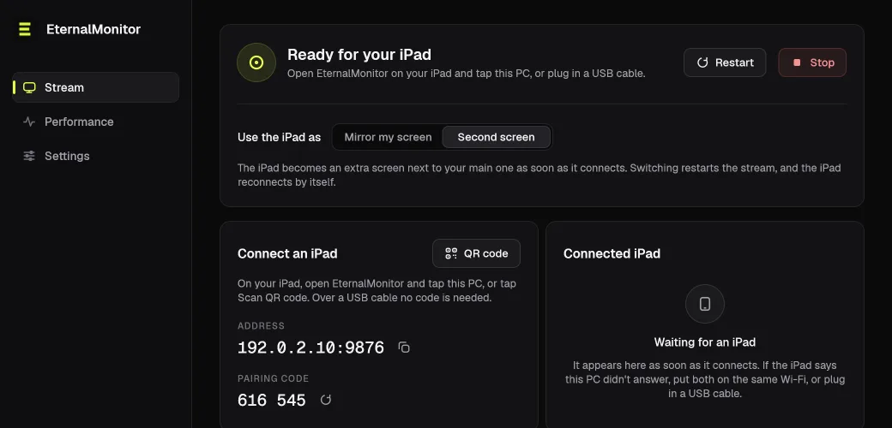

Mirror my screen, or a real second screen
Pick on the PC. Mirror my screen shows your main display on the iPad. Second screen adds the iPad as an extra monitor through a virtual display driver, so windows drag over to it like any other screen. The extra display exists only while the iPad is connected.

The Windows app. The address and pairing code are examples.